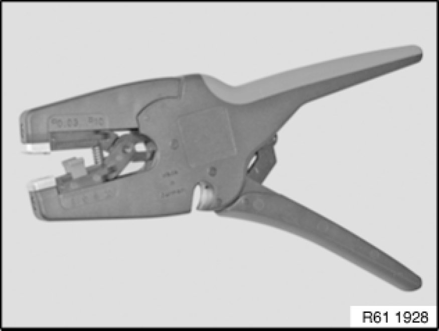

Wiring Harness: Tools and Equipment
61 13 ... - Special tools for wiring harness repairs

Special tools required:
- 12 1 080
- 61 0 200 61 0 200 Crimping Set (Basic Tool)
- 61 0 210 61 0 210 Matrix LSK 8
- 61 0 220 61 0 220 Matrix for SLK 2.8
- 61 0 230 61 0 230 Stencil for Contacts "DFK 40" and "MAK 8"
- 61 0 300 61 0 300 Releasing Tool (Complete Kit)
- 61 0 400
- 61 1 190 61 1 190 Pliers
- 61 4 320 61 4 320 Crimping Set with Pliers
- 61 9 041 61 9 040 Set of Tools for Repair Kit IV
- 61 9 044 61 9 040 Set of Tools for Repair Kit IV

Repair range, vehicle electrical system:
- Refer to Service Information:
SI 2 04 07 341
Release and press-out tool:
- Special tool 61 0 300 61 0 300 Releasing Tool (Complete Kit)
- Special tool 61 0 400 (MINI N12/N14)
Handling:
- Opening plug housings and removing contacts 61 13 ... Opening Plug Housings and Removing Contacts of Different Plug Systems of different plug systems
Refer to Service Information:
- SI 2 05 05 217
- SI 2 05 06 294
- SI 2 08 06 312

Cutting to length and stripping insulation from cables:
Handling:
- Cutting to length and stripping insulation from cables 61 13 ... Cutting to Length and Stripping Insulation From Cables
Crimping stop parts (small contacts):
- special tool 61 4 320 61 4 320 Crimping Set with Pliers
1. Tool without crimping head
2. Crimping head (stripping insulation and cutting fiber-optic cables to length) 61 13 ... Cutting Off, Stripping Insulation and Cutting Optical Fibres to Length
3. Crimping head (crimping fiber-optic cable contacts) 61 13 ... Crimping Optical Fibers
4. Crimping head (crimping MQS contacts) 61 13 ... Crimping Micro Quadlock System Contacts (MQS)
5. Crimping head (crimping MPQ contacts) 61 13 ... Crimping Micro Power Quadlock Contacts (MPQ)
6. Replacement blade (face-cutting fiber-optic cables)
7. Replacement blade with tool (insulation stripping unit)
8. Universal crimping head (SI 2 04 06 293)
Crimping stop parts (large contacts):
- Special tool 61 0 200 61 0 200 Crimping Set (Basic Tool) (crimping set)
- Special tool 61 0 210 61 0 210 Matrix LSK 8 (matrix set LSK 8)
- Special tool 61 0 220 61 0 220 Matrix for SLK 2.8 (matrix set SLK 2.8)
- Special tool 61 0 230 61 0 230 Stencil for Contacts "DFK 40" and "MAK 8" (matrix set MAK 8 / DFK4)
Handling:
- Refer to Service Information:
SI 2 02 05 194
SI 2 07 05 233
Crimping antenna elbow plugs:
- Special tool 61 9 041 61 9 040 Set of Tools for Repair Kit IV (hand crimping tool)
- Special tool 61 9 044 61 9 040 Set of Tools for Repair Kit IV (matrix)
Handling:
- Antenna elbow plug on radio receiver
Repair kit for ignition cables and for crimping fan connector receptacles 4 mm2:
- special tool 12 1 080
Handling:
- Crimping stop parts (contacts) 61 13 ... Crimping Stop Parts
Repairing ribbon cables:
- special tool 61 1 190 61 1 190 Pliers
Handling:
- Repairing ribbon cables 61 13 ... Repairing Ribbon Cables